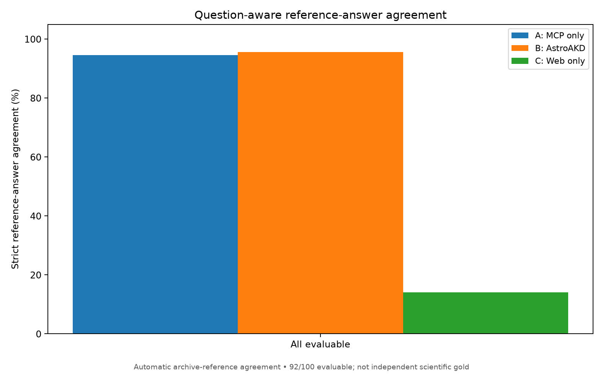
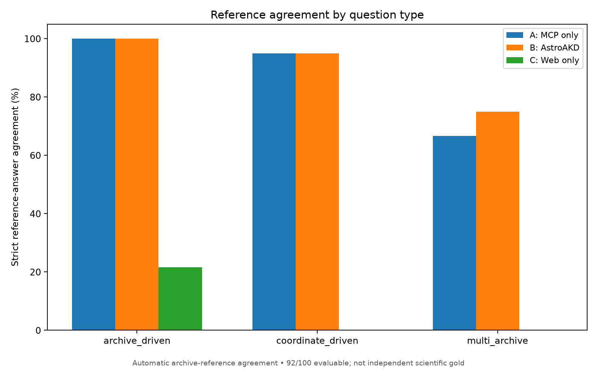
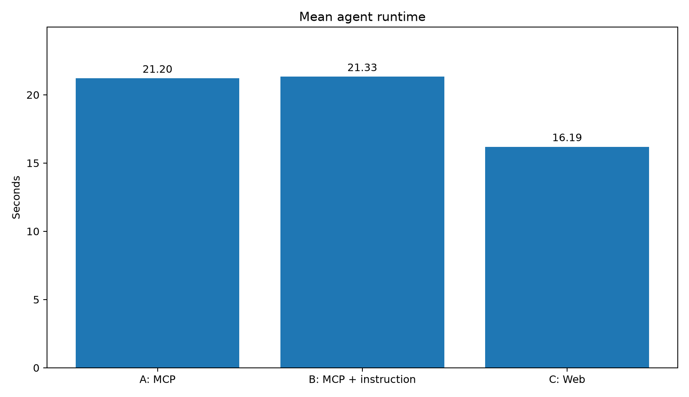

Published example: astroakd_100_v2
The repository includes a curated public example containing generated astronomy questions, independently collected Astroquery MCP reference answers, the A/B/C baseline answer samples, scoring summaries and figures. No live OpenAI or archive calls are necessary to inspect these saved outputs.
Inspect the questions and references
All 100 questions joined with available reference answers — easiest spreadsheet overview, joined on
task_id.Original 100-question generation CSV — question specifications, without collected reference values.
80 single-call references and 20 multi-step reference statuses — 12 completed multi-archive cases and 8 literature tasks without complete reference evidence.
The joined CSV preserves structured values as JSON inside cells. 92 of 100 questions have complete independent reference evidence; the eight literature-driven cases are excluded pending confirmed publication-to-observation associations.
Automatic archive-reference agreement

Outcome |
A: MCP only |
B: AstroAKD instructions |
C: Web only |
|---|---|---|---|
Strict reference matches |
87/92 |
88/92 |
13/92 |
Strict agreement |
94.57% |
95.65% |
14.13% |
Partially correct |
4 |
4 |
2 |
Interpretation: The figures measure agreement with independently retrieved Astroquery MCP reference snapshots, not independently reviewed scientific accuracy. Only fully matching answers count in the strict percentage. The single-question difference between A and B is not established evidence of a domain-instruction benefit; several borderline output-format classifications merit review.
Agreement by question type

Original baseline runtime

The operational figures use the original common-budget A/B/C executions (100 questions per arm, 300 run records), without substituting subsequent higher-turn diagnostic retries. Reference coverage and runtime are different metrics.
For the methodology and report commands, see Evaluation and plots. Additional PNG/SVG figures, archive breakdowns, and example JSONL files are listed in the public examples README.